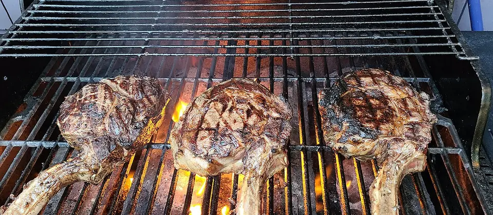
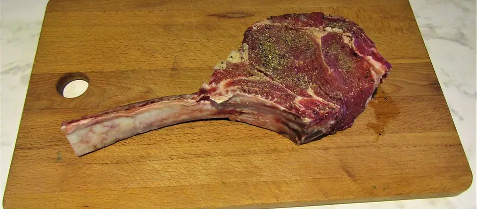

Kimihurura · Kigali · since 2016
InkaSteakhouse
Rwandan beef only.
Cut by hand.
Turn the page →
Checking the hours
Book a tableKimihurura · Kigali · since 2016
Rwandan beef only.
Cut by hand.
Turn the page →
The house
Every steak on this menu is Rwandan beef, from farmers in this country, cut by hand in this kitchen. When Inka opened on 16 November 2016, The New Times called it the first steakhouse in Kigali.
Nicole Ansoni
Chef and owner
Nineteen years of cooking. She brings her Rwandan and Ethiopian heritage to the kitchen, and champions local farmers and African cuisine.
To confirm A photograph of Nicole and her own words go here. Until then:
FacebookInstagram
The cuts
Tap a cut to see where it comes from. To confirm Cuts and weights as last published. Prices to confirm.
The cut: Ribeye
From the rib
Pick a cut to see where it comes from.

To confirm Today's list and prices come from the kitchen. The pairing is our suggestion, not the chef's.
With your steak
To confirm As last published.
Also from the kitchen

To confirm Dishes as reviewed by Living in Kigali and The New Times. The kitchen's current card replaces this page.
The bar
To confirm As last published.
Where to sit
To confirm Rooms as described when Inka opened. Guests report fast Wi-Fi.
Hours
Kigali time --:--
Open every day from 12:00. Until 22:00 Sunday to Thursday, 23:00 on Friday and Saturday.
Kimihurura, in the Rugando valley, KG 605 St. Open the map
Your table
Your email goes to reservations@inka-steakhouse.com
Open the map
To confirm How many make a group, and whether the whiskey room can be booked. Kimihurura, KG 605 St.
Preview made for Inka by Spectre Studio, Kigali. Not yet the official site.